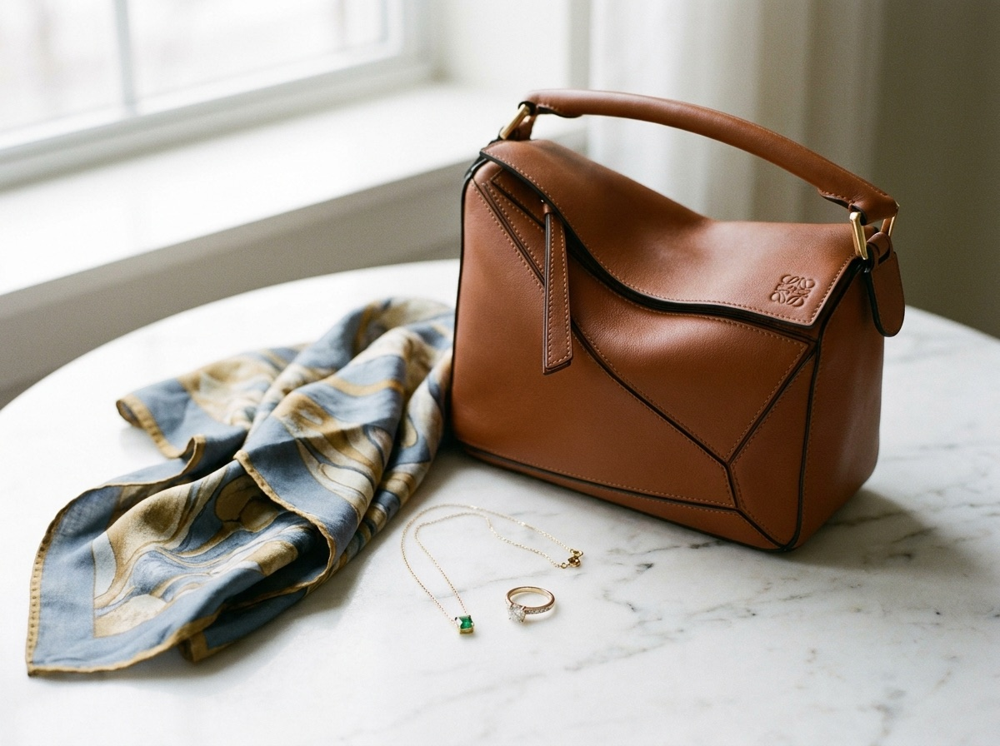

Women's clothing
Curated, upscale pieces across sizes. Dresses, tops, knitwear, and outerwear that have been worn well and kept well, all looked over before they reach the rack.
Upscale women's consignment · Downtown Camden, Maine
Serendipity is a curated consignment shop on Washington Street. Designer and higher-end clothing, handbags, and jewelry, chosen with care and priced to move. The racks change all the time, so it pays to come look.
Preview image. We'll swap in real photos of the shop and the pieces on the floor.
Why people make the trip
Every piece on the floor was chosen. We look closely at condition, label, and fit before anything goes out, so what you find is gently used and worth wearing. You can shop a designer handbag with confidence and try on a dress that still has years of life in it, all at a fraction of what it cost new.
What's inside
Clothing across sizes, the kind of accessories that finish a look, and a handbag wall worth a slow walk. Here's what tends to be on the floor.
Curated, upscale pieces across sizes. Dresses, tops, knitwear, and outerwear that have been worn well and kept well, all looked over before they reach the rack.
The bags people come in for. Designer and higher-end labels, checked for condition, priced far below new. They tend not to last long, so it's worth asking what just came in.
Scarves, belts, jewelry, and the small things that pull an outfit together. Easy to add to a visit, and easy to fall for at the counter.
New consignments come in all the time, so the floor is never quite the same twice. Regulars stop by often because the good pieces go quickly.

Preview image, to be replaced with the shop's own new-arrival photos.
New arrivals
Consignment moves fast, and the nice things move fastest. A bag that lands on Tuesday can be gone by the weekend, which is exactly why so many of our regulars check in often. There's a real reward to being early.
Looking for something specific, like a size or a label? Give us a call and we'll tell you what's on the floor right now.
On the floor
Bring your pieces in
If you've got upscale clothing, a handbag, or jewelry in good shape, we'd be glad to take a look. Consigning with us is a simple way to pass good pieces along and earn from them, handled by a small team that has done this for years.
The easiest first step is a quick call. We'll walk you through what we're looking for right now and the best time to come by.
Come by
The neighborhood
We're in downtown Camden, the walkable harbor-town shopping district on the midcoast. Park once and make an afternoon of it.
Hours
Hours can shift with the season and around new arrivals, so a quick call before you drive in is always a good idea.
Phone